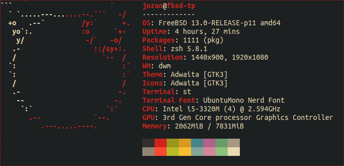

My computing experience
These are the things I use in my day-to-day computing
experience both at home and work. As I enjoy working
from my computer and tweaking it, I recommend them all.
My configuration files for some of these softwares can
be found on my
dotfiles
repo on GitJoe.
Software

-
Text editing
Custom configured GNU Emacs to be used
with vim key bindings. It is not the most
lightweight editor out there but I love my
config for all kind of coding or text editing.
I use the GUI version.
-
OS
FreeBSD 13.0-RELEASE is my OS of choice.
-
Window manager
dwm is my favorite tiling window manager
and the only one I use for it very light and highly
extensible.
-
Terminal emulator
st is my favorite terminal emulator.
Just like dwm, it's very light and highly
extensible.
-
shell
I use zsh as my only interactive shell.
-
Software
Here is a small list of programs I use frequently.
Most are terminal-based.
-
Web browser: Mozilla Firefox for
most web browsing. I also use w3m
and lynx quite a lot.
- file manager: lf
- image viewer: nsxiv
- video player: mpv
- music player: mpd + ncmpc
- pdf viewer: zathura
- RSS feed reader: newsboat
- email client: neomutt running with isync and msmtp
- address book: abook
- calendar: calcurse
- IRC client: irssi
Hardware